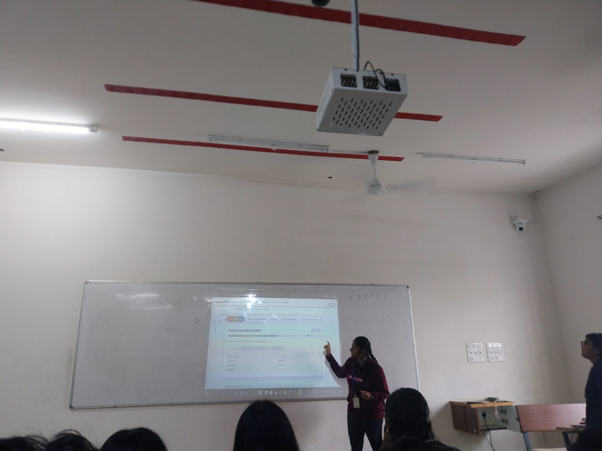
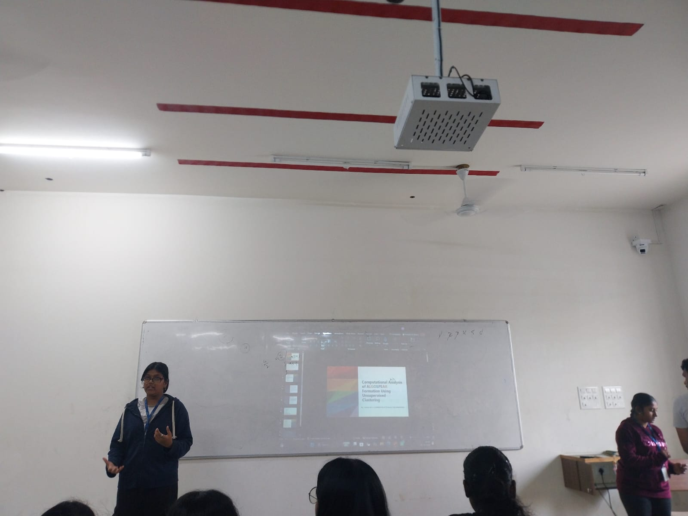
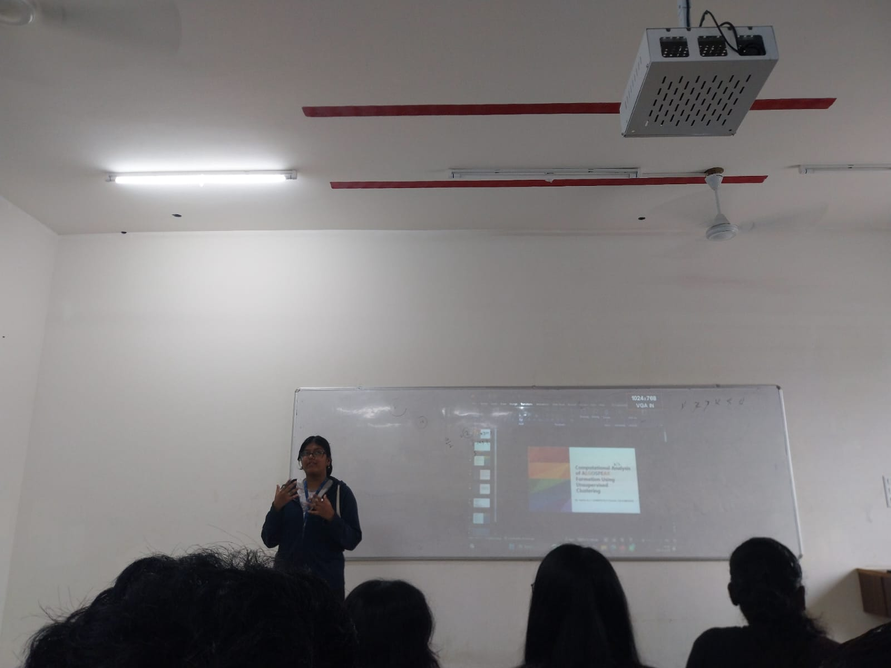

NATURAL LANGUAGE PROCESSING PROJECT
Algospeak Evolution Engine
Exploring how language evolves on social media through creative word modifications and alternative expressions.
NLP · Language Evolution · Text AnalysisWHAT WE AIM TO ACHIEVE
Project Objectives
- To identify and detect algospeak expressions used in online communication.
- To analyse how words and phrases are modified to avoid automated content moderation.
- To examine linguistic patterns, including orthographic, phonetic, morphological and semantic changes.
- To study the origin and evolution of algospeak expressions across digital platforms.
- To group and compare similar algospeak expressions based on their linguistic characteristics.
- To understand how social media users adapt language in response to content moderation algorithms.
THE NLP BEHIND THE PROJECT
Concepts Used
Algospeak
Language modifications used by social media users to communicate ideas while avoiding automated content moderation.
Orthographic Variation
Changes in the spelling or written form of words, including replacing letters with numbers or special characters.
Phonetic Variation
Modifying words based on pronunciation by using alternative spellings or sound-alike expressions.
Morphological Variation
Changing word structures through prefixes, suffixes, abbreviations or other word-formation techniques.
Semantic Variation
Using alternative words or expressions to convey the same or a related meaning.
Feature Extraction
Identifying and extracting linguistic characteristics from text for further analysis.
Phrase Clustering
Grouping similar expressions based on their linguistic features to identify relationships between phrases.
Language Evolution
Studying how expressions originate, change and develop new meanings over time.
HOW THE PROJECT WORKS
Implementation
Data Collection
Collect text data containing social media expressions and potential algospeak terms.
Text Preprocessing
Clean and prepare the collected text by handling unnecessary characters and normalising expressions.
Feature Extraction
Extract orthographic, phonetic, morphological and semantic characteristics from the expressions.
Linguistic Analysis
Analyse the extracted features to understand the different ways in which words and phrases are modified.
Similarity Analysis
Compare expressions using their linguistic characteristics to identify related phrases.
Phrase Clustering
Group similar expressions to discover relationships and variations among algospeak terms.
Evolution Analysis
Examine relationships between expressions to understand how algospeak terms develop and change.
A FEW PROJECT MEMORIES
Project Gallery

Project Moment 01

Project Moment 02

Project Moment 03

Project Moment 04
WHAT I LEARNED
Learning Outcomes
- Understand the concept of algospeak and its role in digital communication.
- Apply NLP techniques to identify and analyse modified words and expressions.
- Explore orthographic, phonetic, morphological and semantic language variations.
- Understand how text preprocessing and feature extraction support language analysis.
- Explore phrase clustering and similarity-based techniques to identify related expressions.
- Gain practical experience in analysing language evolution and the relationship between online communication and automated moderation.
Every word has a story to tell! ♡
Exploring language, discovering patterns and learning something new along the way.